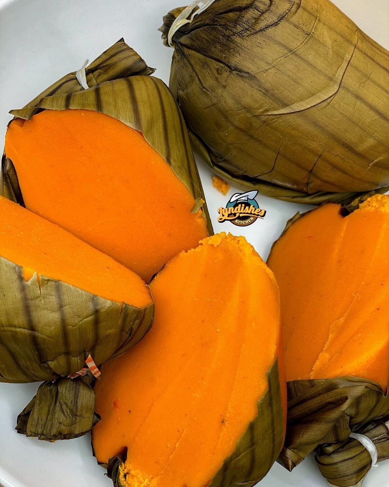

Okpa

Okpa di oku, Okpa di oku, Okpa! Okpa!! Okpa!!! If you are travelling to Enugu, Nigeria from Onitsha, Lagos etc, anywhere from the west of Enugu, these shouts from Okpa sellers will remind you that you are approaching Enugu.
9th Mile Corner in Ngwo near Enugu is well known for the special Okpa that you can trade your valued possession for. The Okpa is so good that many people have tried severally but failed to replicate the unique taste in their own homes.
But the secret to making the best Okpa is to use as few ingredients as possible because okpa beans (Bambara Groundnut or Bambara Beans) have a natural delicious flavour. This flavour is ruined when people start adding lots of seasoning to the meal.
Other names for Okpa are Igba and Ntuch
Ingridients for preparing Okpa
- Okpa Flour,
- Luke warm water
- Okpa Flour
- Uziza
- Red Pepper
- Onions
- Palm Oil
Steps in preparing Jollof Rice
- Add your pepper, Uziza, and Onions into a blender
- Blend to paste
- Add the flour to a bowl
- Add paste and Palm oil
- Stir and add Lukewarm water
- add seasoning and salt to taste
- stir and scoop with a cup into a wrapper